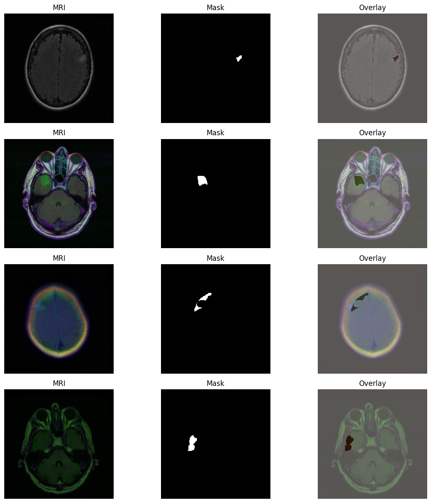
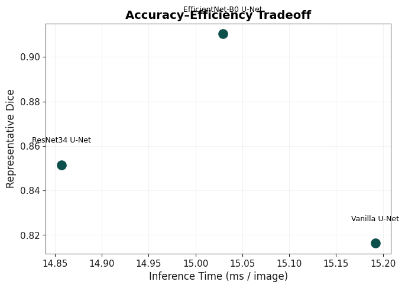
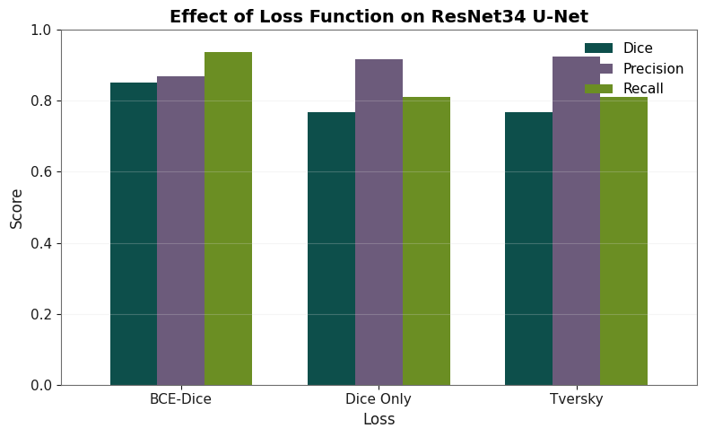
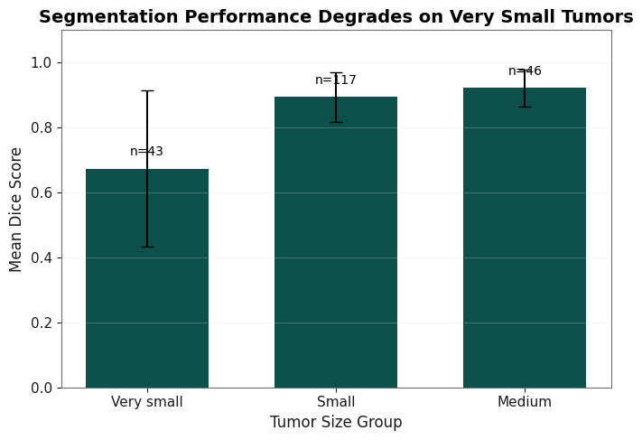
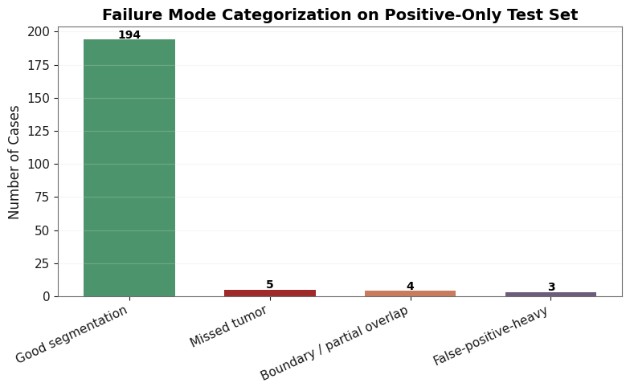
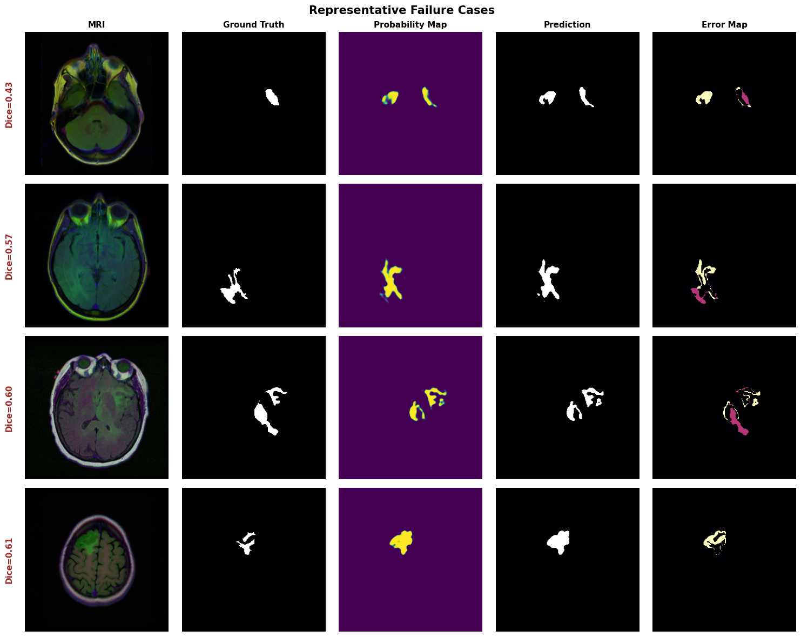
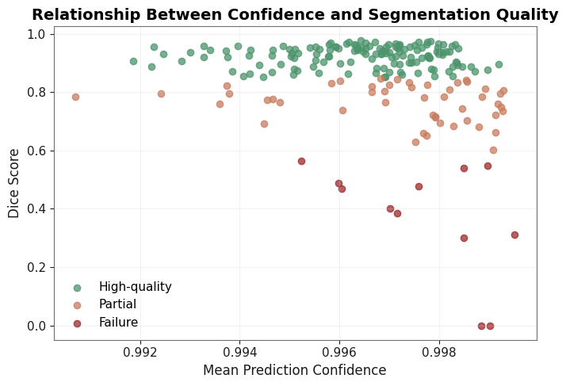
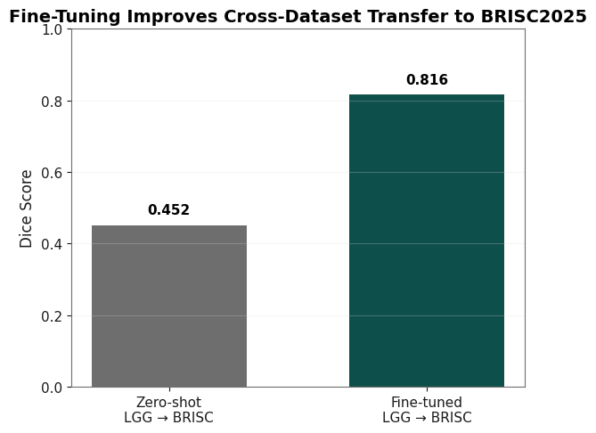

<meta charset="utf-8">
<title>Brain Tumor Segmentation — Report</title>
<link rel="stylesheet" href="../../assets/css/style.css">

<header class="hero" style="--accent: var(--hue-violet);">
  <div class="wrap">
    <p class="eyebrow">Project 01 · Deep Learning / Computer Vision · Coursework</p>
    <h1>A Comparative Study for Brain Tumor Segmentation in MRI Scans</h1>
    <p class="lede">
      Four U-Net variants, three loss functions, and a deliberate stress-test of the
      benchmark itself — evaluation protocol, tumor size, model confidence, and
      cross-dataset transfer all change the story a single Dice score tells.
    </p>
    <div class="links">
      <a href="../../index.html">&larr; All projects</a>
      <a href="notebooks/brain_tumor_segmentation.ipynb">Notebook</a>
      <a href="README.md">Project README</a>
      <a href="Final_Report.pdf">Original PDF write-up</a>
      <a href="https://www.kaggle.com/datasets/mateuszbuda/lgg-mri-segmentation">Dataset source</a>
    </div>
  </div>
</header>

<main class="wrap report">

  <section>
    <h2>The numbers</h2>
    <div class="stat-row">
      <div class="stat"><div class="value badge-good">0.854</div><div class="label">Best Dice (tumor slices only)</div></div>
      <div class="stat"><div class="value">6.25M</div><div class="label">Params, best model (fewest of the 4)</div></div>
      <div class="stat"><div class="value">0.674</div><div class="label">Dice on very small tumors</div></div>
      <div class="stat"><div class="value badge-bad">0.998</div><div class="label">Avg. confidence on failed cases</div></div>
    </div>
  </section>

  <section>
    <p>
      Originally built as a graduate coursework deliverable (Information Management),
      included here because the methodology — architecture comparison,
      evaluation-protocol sensitivity, failure analysis, confidence calibration,
      transfer learning — generalizes directly to any applied ML problem, not just
      medical imaging.
    </p>
  </section>

  <section>
    <h2>Problem</h2>
    <p>
      Brain tumor segmentation from MRI is a pixel-level prediction task with severe
      class imbalance — tumor pixels are a small minority of each scan. The real
      question this project asks isn't just "which architecture wins," it's:
      <strong>when should you trust a segmentation model's output, and when will it
      quietly fail?</strong>
    </p>
    <figure>
      
      <figcaption>Sample MRI slices, ground-truth masks, and overlays from the LGG MRI dataset.</figcaption>
    </figure>
  </section>

  <section>
    <h2>Method</h2>
    <ol>
      <li><strong>4 architectures</strong> — Vanilla U-Net (from scratch), Attention U-Net, ResNet34 U-Net, EfficientNet-B0 U-Net (the latter two with pretrained encoders).</li>
      <li><strong>3 loss functions</strong> — BCE-Dice, Dice-only, Tversky — to study the precision/recall trade-off under class imbalance.</li>
      <li><strong>2 evaluation protocols</strong> — full dataset (including tumor-free slices) vs positive-only (tumor-containing slices) — deliberately compared against each other.</li>
      <li><strong>Tumor-size stratified evaluation</strong>, <strong>failure-mode categorization</strong>, <strong>confidence analysis</strong>, and <strong>cross-dataset transfer learning</strong> (zero-shot + fine-tuned on a second dataset, BRISC2025).</li>
    </ol>
  </section>

  <section>
    <h2>Architecture comparison</h2>
    <table>
      <thead><tr><th>Model</th><th>Full-dataset Dice</th><th>Positive-only Dice</th><th>IoU</th><th>Precision</th><th>Recall</th></tr></thead>
      <tbody>
        <tr><td>Vanilla U-Net</td><td>0.834</td><td>0.785</td><td>0.658</td><td>0.711</td><td>0.905</td></tr>
        <tr><td>Attention U-Net</td><td>0.812</td><td>0.812</td><td>0.722</td><td>0.806</td><td>0.875</td></tr>
        <tr><td>ResNet34 U-Net</td><td>0.857</td><td>0.849</td><td>0.766</td><td>0.852</td><td>0.879</td></tr>
        <tr><td><strong>EfficientNet-B0 U-Net</strong></td><td class="badge-good">0.912</td><td class="badge-good">0.854</td><td class="badge-good">0.770</td><td>0.850</td><td>0.882</td></tr>
      </tbody>
    </table>
    <p>
      Pretrained encoders (ResNet34, EfficientNet-B0) clearly beat the from-scratch
      baseline. Attention U-Net improved over Vanilla but didn't beat the pretrained
      models — added architectural complexity alone didn't pay off here.
    </p>
    <figure>
      
      <figcaption>EfficientNet-B0 wins on accuracy <em>and</em> uses the fewest parameters (6.25M vs ResNet34's 24.4M) at nearly identical inference speed.</figcaption>
    </figure>
  </section>

  <section>
    <h2>The most important finding: evaluation protocol changes the conclusion</h2>
    <figure>
      
      <figcaption>Same models, two evaluation protocols — the apparent gap between EfficientNet-B0 and ResNet34 nearly disappears once tumor-free slices are excluded.</figcaption>
    </figure>
    <div class="callout">
      Full-dataset evaluation includes many slices with empty masks, where predicting
      "no tumor" is trivially correct — this inflates Dice without reflecting real
      segmentation quality. Under full-dataset evaluation EfficientNet-B0 looks
      dramatically ahead (0.912 vs 0.857); restricted to tumor-containing slices, the
      gap nearly closes (0.854 vs 0.849). <strong>Reporting a single headline score
      without stating the evaluation protocol is misleading</strong> — and this
      generalizes well past medical imaging to any benchmark with an easy-majority-class
      subset.
    </div>
  </section>

  <section>
    <h2>Loss function trade-offs</h2>
    <figure>
      
      <figcaption>BCE-Dice gave the best overall balance; Tversky traded precision for higher recall — relevant if missed tumors are costlier than false positives.</figcaption>
    </figure>
  </section>

  <section>
    <h2>Performance collapses on very small tumors</h2>
    <figure>
      
      <figcaption>Medium (n=46) and small (n=117) tumors segment well; very small tumors (n=43) drop to 0.674 mean Dice with much higher variance.</figcaption>
    </figure>
    <p>
      Aggregate Dice hides this: the cases most likely to matter clinically — small,
      early-stage lesions — are exactly where the model is least reliable.
    </p>
  </section>

  <section>
    <h2>Failure analysis</h2>
    <figure>
      
      <figcaption>Of 206 test cases, 194 were good segmentations; the remainder split across missed tumors, boundary/partial overlap, and false-positive-heavy cases.</figcaption>
    </figure>
    <figure>
      
      <figcaption>Representative failures — missed boundaries, false positives, and partial overlap, with per-case Dice scores.</figcaption>
    </figure>
  </section>

  <section>
    <h2>The model is confidently wrong</h2>
    <figure>
      
      <figcaption>Failed cases (red) cluster at the same ~0.99+ confidence as high-quality segmentations (green) — confidence does not separate successes from failures.</figcaption>
    </figure>
    <div class="callout">
      This is the sharpest result in the project. Failed segmentations (mean Dice
      0.374) had <strong>average confidence 0.998</strong> — essentially
      indistinguishable from high-quality segmentations (mean Dice 0.924, confidence
      0.996). For any application where a confidence score might gate a human review
      step, that's a real problem, not a footnote.
    </div>
  </section>

  <section>
    <h2>Zero-shot transfer fails; fine-tuning mostly fixes it</h2>
    <figure>
      
      <figcaption>Zero-shot transfer to a different MRI dataset (BRISC2025) drops to 0.452 Dice; fine-tuning recovers to 0.816.</figcaption>
    </figure>
    <p>
      Strong in-domain performance did not transfer to a different scanner/protocol
      out of the box — but the learned features were still useful once adapted,
      recovering most of the original performance with limited fine-tuning.
    </p>
  </section>

  <section>
    <h2>What I'd improve with more time</h2>
    <p>Being upfront about this rather than presenting it as finished:</p>
    <ul>
      <li><strong>Single train/val/test split, single seed</strong> per experiment — no confidence intervals or significance testing, so the ResNet34 vs EfficientNet-B0 gap (0.849 vs 0.854) is within noise range and shouldn't be over-read.</li>
      <li><strong>2D slices, not 3D volumes</strong> — discards cross-slice spatial context a 3D-aware model could use.</li>
      <li><strong>Confidence analysis used raw softmax output</strong>, not a calibrated uncertainty method (temperature scaling, MC dropout, deep ensembles) — the poor-calibration finding is real, but proper calibration is the natural next step.</li>
      <li><strong>Single primary dataset</strong> for the main benchmark — BRISC2025 was only used for transfer learning, not as a second in-domain benchmark.</li>
    </ul>
  </section>

  <section>
    <h2>Skills demonstrated</h2>
    <div class="tags">
      <span class="tag">PyTorch</span>
      <span class="tag">U-Net / ResNet / EfficientNet</span>
      <span class="tag">segmentation_models.pytorch</span>
      <span class="tag">Custom Loss Functions</span>
      <span class="tag">Evaluation Methodology</span>
      <span class="tag">Model Calibration</span>
      <span class="tag">Transfer Learning</span>
    </div>
  </section>

</main>

<footer>
  <div class="wrap">
    Data sources: <a href="https://www.kaggle.com/datasets/mateuszbuda/lgg-mri-segmentation">LGG MRI Segmentation</a>,
    <a href="https://www.kaggle.com/datasets/briscdataset/brisc2025">BRISC2025</a>.
    Full code in the <a href="notebooks/brain_tumor_segmentation.ipynb">notebook</a>,
    full narrative in the <a href="Final_Report.pdf">original PDF write-up</a>.
  </div>
</footer>
